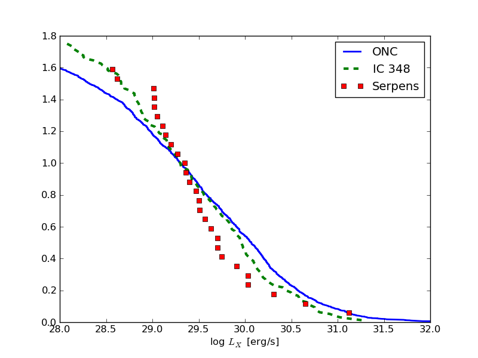

These pages show a way to read most of the files astronomers will need in their day-to-day work. However, no format is so obscure that is could not be used and there are certainly files out there that will not fall into one of the categories above. Here are some hints:
If it is an ASCII file, often some manual editing will do the job. E.g. in a space-separated table there are missing values:
col1 col2 col3
aaaa 1 2
bbbb 3
cccc 4 5
In a text editor put nan in the empty space and aciitable will read the file.
Google. No file format is too obscure to find a reader for it.
When writing files, use standard formats like fits, ascii, hdu5 and not your personal, undocumented binary format.
Final exercise
A word of warning: This excercise makes use of almost all concepts shown in the tutorial this far, don’t get frustrated. If you are stuck, you are allowed to peak at the solution!
We want to compare the X-ray luminosity function (XLF) of young star-forming regions.
The data is taken from the literature, but comes in different formats. Read the tables and plot the XLF (fraction of stars vs. log(L_X)) of all three clusters.
Download the example data:
from astropy.extern.six.moves.urllib import request
import tarfile
url = 'http://python4astronomers.github.com/_downloads/files-excercise.tar.gz'
tarfile.open(fileobj=request.urlopen(url), mode='r|gz').extractall()
cd files
ls
In your directory there are 3 files:
- COUP.fits
- The final results of the Chandra Orion Ultradeep project (COUP). The logarithmic X-ray luminosities are in column Ltc.
- IC348.dat
- CDS machine readable table, downloaded directly from CDS. All documentation is in the file itself. Open the file in your preferred text viewer (vi, emacs, less) and you will see that column XLum contains the X-ray luminosities in unites of 1e28 erg/s.
Read each data file and put the X-ray luminosity in a varible. Normalize all luminosity functions to 1 at log(L_X) = 29.3. Make a plot.
Hint 1 All tables have missing L_X values. Be careful when plotting. Remember boolean masks from NumPy?:
index_good_data = (dat['Ltc'] > 0)
# make new array, which only has good L_X values
good_LX_values = dat['Ltc'][index_good_data]
# These two lines can be concatenated:
good_LX_values = dat['Ltc'][dat['Ltc'] > 0]
Hint 2 If you have all you luminosities in vector called L_X then this code will plot a good XLF:
L_X.sort()
# np.arange(len(L_X)) makes a y-axis from 0 to len(L_X)
# np.arange(len(L_X), 0, -1) makes a y-axis from len(L_X) to 0
# -> dtype = float, because 4 / 5 = 0 (integer devision)
yaxis = np.arange(len(L_X), 0, -1, dtype = float)
plt.plot(L_X, yaxis)
Extra points:
- Winston2010tab4.txt
- From Winston and al (2010). I took this table from the journal page and just pasted it into a text file. Open the file in your preferred text viewer (vi, emacs, less) to decide how you could read this file. The logarithmic X-ray luminosities are in column L_X.
Click to Show/Hide Solution
This is a complex excercise and several solutions are possible. This is one:
import asciitable
import atpy
COUP = atpy.Table('COUP.fits')
# atpy.Table(... , type = 'ascii') tells atpy to use asciitable to read the file
IC348 = atpy.Table('IC348.dat', type = 'ascii')
# take only L_X greater than 0, that gets rid of nans etc.
# Nans in the table mark missing values and things like that.
couplx=COUP.Ltc[COUP.Ltc > 0.]
# L_X is in linear units of 1e28 erg/s
# take logarithm and add 25
IC348lx = 28. + np.log10(IC348.XLum[np.isfinite(IC348.XLum)])
# sort - highest first
couplx.sort()
IC348lx.sort()
Lx0 = 29.3 # normalize L_X at 29.3
# np.arange(len(couplx)) makes a y-axis from 0 to len(couplx)
# np.arange(len(couplx), 0, -1) makes a y-axis from len(couplx) to 0
# -> dtype = float, because 4 / 5 = 0 (integer devision)
# (IC348lx>Lx0).sum() -> number of sources brighther than Lx0
plt.plot(couplx, np.arange(len(couplx), 0, -1, dtype=float)/(couplx>Lx0).sum(), lw=2.,label = 'ONC')
plt.plot(IC348lx, np.arange(len(IC348lx),0 ,-1, dtype=float)/(IC348lx>Lx0).sum(), '--', lw=3.,label = 'IC 348')
# add some nice labels etc.
plt.xlabel('log $L_X$ [erg/s]')
plt.xlim([28,32])
plt.legend(loc = 'upper right')
#Extra points
winston = atpy.Table('Winston2010tab4.txt', type='ascii', \
Reader = asciitable.Tab, comment='#', guess=False, fill_values=([' ... ', 'nan']))
Serplx = winston.L_X[winston.L_X > 0]
Serplx.sort()
plt.plot(Serplx, np.arange(len(Serplx), 0, -1, dtype=float)/(Serplx>Lx0).sum(), 's', label = 'Serpens')
And this is how it could look like:
{kind=link}